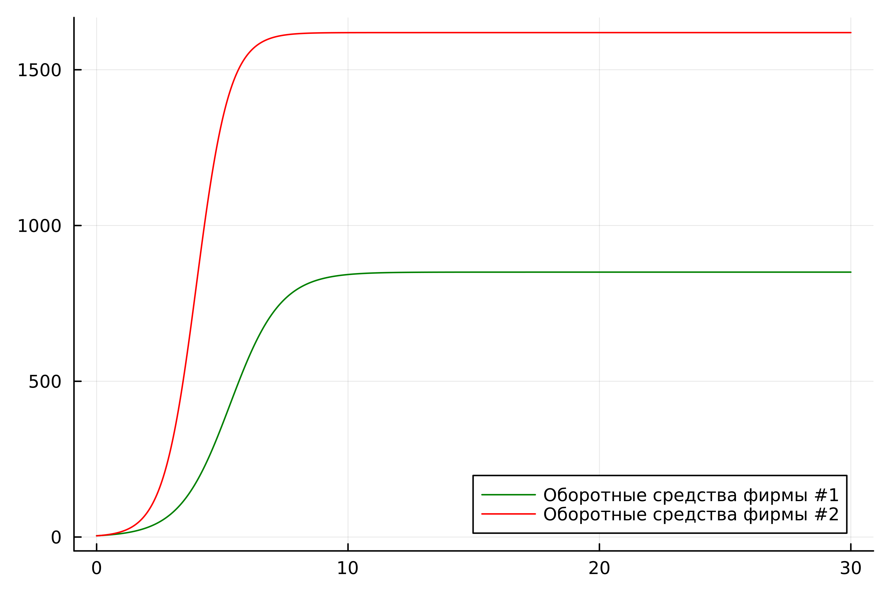
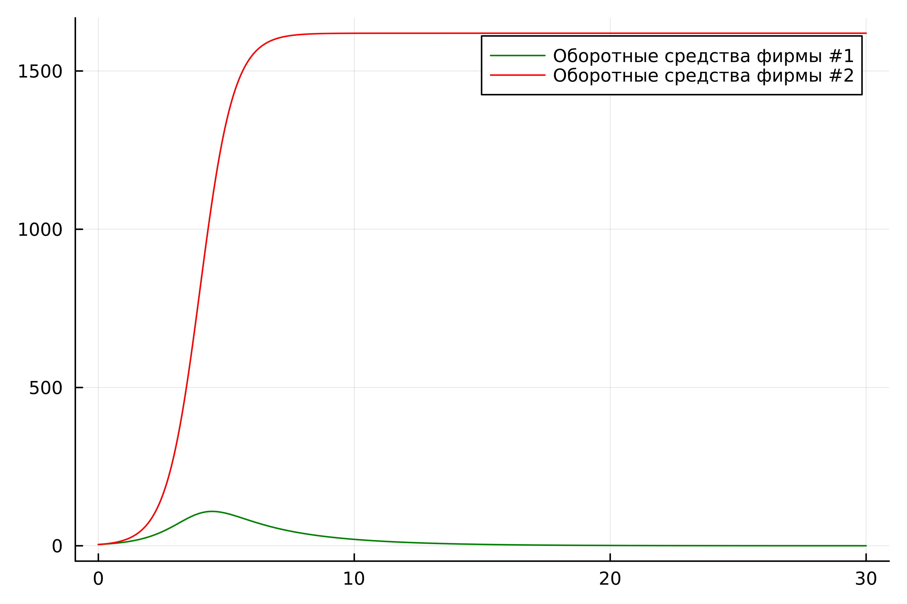
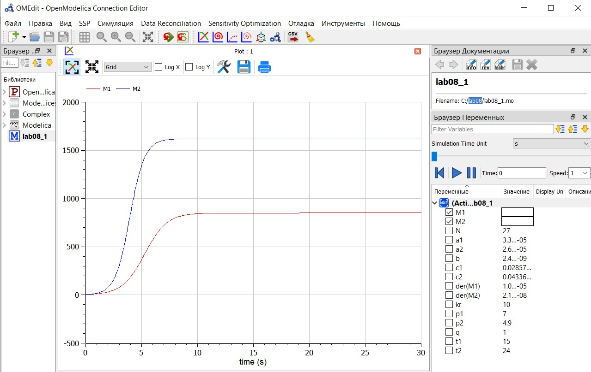
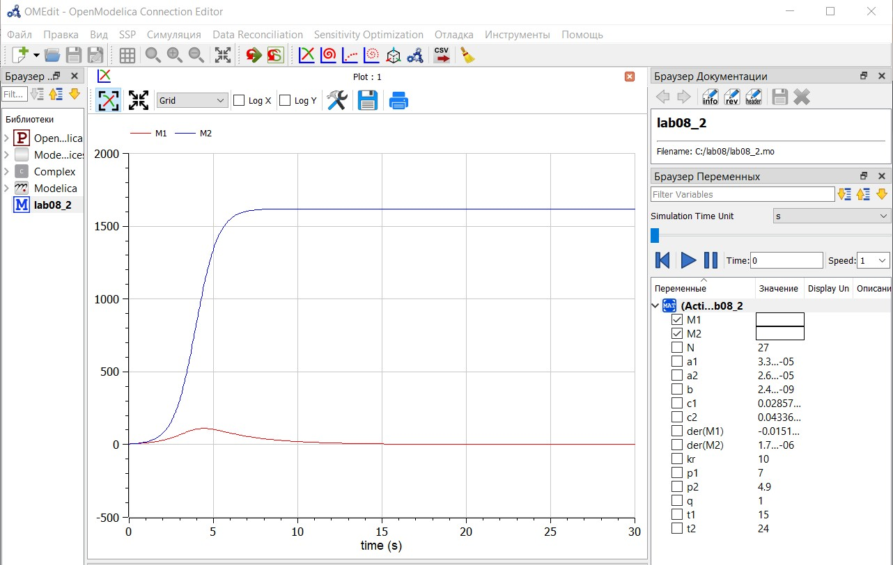

Выполнилa: Лебедева Ольга Андреевна
Группа: НФИбд-02-21
Преподаватель Кулябов Дмитрий Сергеевич д.ф.-м.н., профессор кафедры теории вероятностей и кибербезопасности
Институт: Российский университет дружбы народов, Москва, Россия
Год: 2024
Изучить модель конкуренции двух фирм[1]. Написать код на языках Julia[2] и OpenModelica[3] и построить графики для двух различных случаев.
Для построения модели конкуренции хотя бы двух фирм необходимо рассмотреть модель одной фирмы. Вначале рассмотрим модель фирмы, производящей продукт долговременного пользования, когда цена его определяется балансом спроса и предложения. Примем, что этот продукт занимает определенную нишу рынка и конкуренты в ней отсутствуют. Обозначим:
$N$ - число потребителей производимого продукта.
$S$ – доходы потребителей данного продукта. Считаем, что доходы всех потребителей одинаковы. Это предположение справедливо, если речь идет об одной рыночной нише, т.е. производимый продукт ориентирован на определенный слой населения.
$M$ – оборотные средства предприятия
$\tau$ - длительность производственного цикла
$p$ - рыночная цена товара
$\widetilde{p}$ - себестоимость продукта, то есть переменные издержки на производство единицы продукции
$\delta$ - доля оборотных средств, идущая на покрытие переменных издержек
$k$ - постоянные издержки, которые не зависят от количества выпускаемой продукции
$Q(S/p)$ – функция спроса, зависящая от отношения дохода $S$ к цене $p$. Она равна количеству продукта, потребляемого одним потребителем в единицу времени.
Функцию спроса товаров долговременного использования часто представляют в простейшей форме:
$$Q = q - k\frac{p}{S} = q(1 - \frac{p}{p_{cr}})$$
где $q$ – максимальная потребность одного человека в продукте в единицу времени. Эта функция падает с ростом цены и при $p = p_{cr}$ (критическая стоимость продукта) потребители отказываются от приобретения товара. Величина $p_{cr} = Sq/k$. Параметр $k$ – мера эластичности функции спроса по цене. Таким образом, функция спроса является пороговой (то есть, $Q(S/p) = 0$ при $p \geq p_{cr}$) и обладает свойствами насыщения.
Уравнения динамики оборотных средств можно записать в виде:
$$\frac{dM}{dt} = -\frac{M \delta}{\tau} + NQp - k = -\frac{M\delta}{\tau} + Nq(1 - \frac{p}{p_{cr}})p - k$$
Уравнение для рыночной цены $p$ представим в виде:
$$\frac{dp}{dt} = \gamma (-\frac{M\delta}{\tau \widetilde{p}} + Nq(1-\frac{p}{p_{cr}}) )$$
Уравнения динамики оборотных средств приобретает вид:
$$\frac{dM}{dt} = -\frac{M \delta}{\tau}(\frac{p}{p_{cr}}-1) - M^2 ( \frac{\delta}{\tau \widetilde{p} })^2 \frac{p_{cr}}{Nq} - k$$
Это уравнение имеет два стационарных решения, соответствующих условию $dM/dt=0$
$$ \widetilde{M_{1,2}} = \frac{1}{2} a \pm \sqrt{\frac{a^2}{4} - b}$$
где
$$ a = Nq(1 - \frac{\widetilde{p}}{p_{cr}} \widetilde{p} \frac{\tau}{\delta}), b = kNq \frac{(\tau \widetilde{p})^2}{p_{cr}\delta ^2} $$
Вариант 17
Случай 1
Рассмотрим две фирмы, производящие взаимозаменяемые товары одинакового качества и находящиеся в одной рыночной нише. Считаем, что в рамках нашей модели конкурентная борьба ведётся только рыночными методами. То есть, конкуренты могут влиять на противника путем изменения параметров своего производства: себестоимость, время цикла, но не могут прямо вмешиваться в ситуацию на рынке («назначать» цену или влиять на потребителей каким-либо иным способом.) Будем считать, что постоянные издержки пренебрежимо малы, и в модели учитывать не будем. В этом случае динамика изменения объемов продаж фирмы 1 и фирмы 2 описывается следующей системой уравнений:
$$\frac{dM_1}{d\Theta} = M_1 - \frac{b}{c_1}M_1 M_2 - \frac{a1}{c1} M_1^2 $$
$$\frac{dM_2}{d\Theta} = \frac{c_2}{c_1}M_2 - \frac{b}{c_1} M_1 M_2 - \frac{a_2}{c_1} M_2^2$$
где
$$a_1 = \frac{p_{cr}}{\tau_1^2 \widetilde{p}_1^2 Nq }$$
$$a_2 = \frac{p_{cr}}{\tau_2^2 \widetilde{p}_2^2 Nq }$$
$$b = \frac{p_{cr}}{\tau_1^2 \widetilde{p}_1^2 \tau_2^2 \widetilde{p}_2^2 Nq}$$
$$c_1 = \frac{p_{cr} - \widetilde{p}_1}{\tau_1 \widetilde{p}_1}$$
$$c_2 = \frac{p_{cr} - \widetilde{p}_2}{\tau_2 \widetilde{p}_2}$$
также введена нормировка $t = c_1 \Theta$
Случай 2
Рассмотрим модель, когда, помимо экономического фактора влияния (изменение себестоимости, производственного цикла, использование кредита и т.п.), используются еще и социально-психологические факторы – формирование общественного предпочтения одного товара другому, не зависимо от их качества и цены. В этом случае взаимодействие двух фирм будет зависеть друг от друга, соответственно коэффициент перед $M_1 M_2$ будет отличаться. Пусть в рамках рассматриваемой модели динамика изменения объемов продаж фирмы 1 и фирмы 2 описывается следующей системой уравнений:
$$\frac{dM_1}{d\Theta} = M_1 - (\frac{b}{c_1} + 0.0008)M_1 M_2 - \frac{a1}{c1} M_1^2 $$
$$ \frac{dM_2}{d\Theta} = \frac{c_2}{c_1} M_2 - \frac{b}{c_1} M_1 M_2 - \frac{a_2}{c_1} M_2^2$$
Для обоих случаев рассмотрим задачу со следующими начальными условиями и параметрами:
$$ M_0^1=4.3 : M_0^2=3.9 $$ $$ p_{cr}=10 : N=27 : q=1 $$ $$ \tau_1=15 : \tau_2=24 $$ $$ \widetilde{p}_1=7 : \widetilde{p}_2=4.9 $$
Напишем код на Jilia для случая 1:
using Plots
using DifferentialEquations
kr = 10
t1 = 15
p1 = 7
t2 = 24
p2 = 4.9
N = 27
q = 1
a1 = kr / (t1 * t1 * p1 * p1 * N * q)
a2 = kr / (t2 * t2 * p2 * p2 * N *q)
b = kr / (t1 * t1 * t2 * t2 * p1 * p1 * p2 * p2 * N * q)
c1 = (kr - p1) / (t1 * p1)
c2 = (kr - p2) / (t2 * p2)
function ode_fn(du, u, p, t)
M1, M2 = u
du[1] = u[1] - b / c1*u[1] * u[2] - a1 / c1*u[1] * u[1]
du[2] = c2 / c1*u[2] - b / c1*u[1] * u[2] - a2 / c1*u[2] * u[2]
end
v0 = [4.2, 3.9]
tspan = (0.0, 30.0)
prob = ODEProblem(ode_fn, v0, tspan)
sol = solve(prob, dtmax = 0.05)
M1 = [u[1] for u in sol.u]
M2 = [u[2] for u in sol.u]
T = [t for t in sol.t]
plt = plot(
dpi = 600,
legend = true)
plot!(plt, T, M1, label = "Оборотные средства фирмы #1", color = :green)
plot!(plt, T, M2, label = "Оборотные средства фирмы #2", color = :red)
savefig(plt, "lab08_1.png")
Запустим код при помощи командной строки и получим изображение с изменением оборотных средств двух фирм: Cм. рис. 1

По графику видно, что рост оборотных средств предприятий идет независимо друг от друга.
Каждая фирма достигает свое максимальное значение объема продаж и остается на рынке с этим значением, то есть каждая фирма захватывает свою часть рынка потребителей, которая не изменяется.
Напишем код на Jilia для случая 2:
using Plots
using DifferentialEquations
kr = 10
t1 = 15
p1 = 7
t2 = 24
p2 = 4.9
N = 27
q = 1
a1 = kr / (t1 * t1 * p1 * p1 * N * q)
a2 = kr / (t2 * t2 * p2 * p2 * N *q)
b = kr / (t1 * t1 * t2 * t2 * p1 * p1 * p2 * p2 * N * q)
c1 = (kr - p1) / (t1 * p1)
c2 = (kr - p2) / (t2 * p2)
function ode_fn(du, u, p, t)
M1, M2 = u
du[1] = u[1] - (b / c1 + 0.0008)*u[1] * u[2] - a1 / c1*u[1] * u[1]
du[2] = c2 / c1*u[2] - b / c1*u[1] * u[2] - a2 / c1*u[2] * u[2]
end
v0 = [4.2, 3.9]
tspan = (0.0, 30.0)
prob = ODEProblem(ode_fn, v0, tspan)
sol = solve(prob, dtmax = 0.05)
M1 = [u[1] for u in sol.u]
M2 = [u[2] for u in sol.u]
T = [t for t in sol.t]
plt = plot(
dpi = 600,
legend = :topright)
plot!(plt, T, M1, label = "Оборотные средства фирмы #1", color = :green)
plot!(plt, T, M2, label = "Оборотные средства фирмы #2", color = :red)
savefig(plt, "lab08_2.png")
Запустим код при помощи командной строки и получим изображениe: Cм. рис. 2

По графику видно, что вторая фирма, несмотря на начальный рост, достигнув своего максимального объема продаж, начитает нести убытки и, в итоге, терпит банкротство. Динамика роста объемов оборотных средств первой фирмы остается без изменения: достигнув максимального значения, остается на этом уровне.
Напишем код на OpenModelica для случая 1:
model lab08_1
Real kr = 10;
Real t1 = 15;
Real p1 = 7;
Real t2 = 24;
Real p2 = 4.9;
Real N = 27;
Real q = 1;
Real a1 = kr / (t1 * t1 * p1 * p1 * N * q);
Real a2 = kr / (t2 * t2 * p2 * p2 * N * q);
Real b = kr / (t1 * t1 * t2 * t2 * p1 * p1 * p2 * p2 * N * q);
Real c1 = (kr - p1) / (t1 * p1);
Real c2 = (kr - p2) / (t2 * p2);
Real M1;
Real M2;
initial equation
M1 = 4.3;
M2 = 3.9;
equation
der(M1) = M1 - b / c1 * M1 * M2 - a1 / c1 * M1 * M1;
der(M2) = c2 / c1 * M2 - b / c1 * M1 * M2 - a2 / c1 * M2 * M2;
end lab08_1;
Запустим код при помощи кнопок "проверить модель" -> "симулировать". Не забываем в настройках указать заданные нам начальные условия (время). Cм. рис. 3

Напишем код для случая 2:
model lab08_2
Real kr = 10;
Real t1 = 15;
Real p1 = 7;
Real t2 = 24;
Real p2 = 4.9;
Real N = 27;
Real q = 1;
Real a1 = kr / (t1 * t1 * p1 * p1 * N * q);
Real a2 = kr / (t2 * t2 * p2 * p2 * N * q);
Real b = kr / (t1 * t1 * t2 * t2 * p1 * p1 * p2 * p2 * N * q);
Real c1 = (kr - p1) / (t1 * p1);
Real c2 = (kr - p2) / (t2 * p2);
Real M1;
Real M2;
initial equation
M1 = 4.3;
M2 = 3.9;
equation
der(M1) = M1 - (b / c1 + 0.0008) * M1 * M2 - a1 / c1 * M1 * M1;
der(M2) = c2 / c1 * M2 - b / c1 * M1 * M2 - a2 / c1 * M2 * M2;
end lab08_2;
Запустим код: Cм. рис. 4

___~~~~
В итоге проделанной работы на языках Julia и OpenModelica мы построили графики изменения оборотных средств для двух фирм для случаев, когда конкурентная борьба ведётся только рыночными методами и когда, помимо экономического фактора влияния, используются еще и социально-психологические факторы.
Построение модели конкуренции двух фирм на языке OpenModelica более ёмкое, чем аналогичное построение на Julia.
В ходе выполнения лабораторной работы была изучена модель конкуренции двух фирм и построена на языках Julia и Open Modelica.
[1] Математические модели конкурентной среды: https://dspace.spbu.ru/bitstream/11701/12019/1/Gorynya_2018.pdf
[2] Документация по Julia: https://docs.julialang.org/en/v1/
[3] Документация по OpenModelica: https://openmodelica.org/